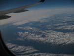
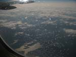
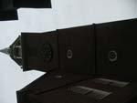
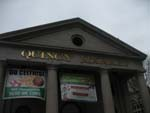
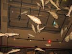
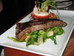
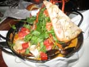
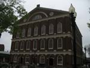
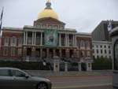

Well, I suppose you have to say the holiday has really started. After numerous good-byes to the puppies, and a farewell and final instructions to our house sitter (Kevin) we set off to drive from Cromarty to the hotel. Four and a half hours later (bad traffic in Glasgow) we arrived at the hotel.
Surprisingly, they had our reservation, the room was nice [and quiet, which isn't bad for an airport hotel] and we were able to get the car parked up, and wander in for a very pleasant meal. (Since you ask, King prawn Bruschetta & Cannelloni Fiorentina to start, and a couple of pizzas, chessboard and ice cream to finish. Very nice Nero d'Avola Shiraz after a couple of Peroni – 2 Sambucca afterwards...
The wireless broadband worked, so much to E's mixed enjoyment and irritation we were able to check her email – and S was able to update some of his social networking rubbish... So, Kevin's had his first “Are the dogs OK” email – and Steve's tweeted from Glasgow. A quiet stroll and then an early bed beckons.
We had a pretty ropy night’s sleep, despite it being a really nice room. largely, I suspect down to the heat. At first we had to have the window open, which meant it was noisy. Later, with the window shut it again got stuffy, but it also started going light at around 4am. Our in room breakfast was very pleasant – although delivered half an hour late... and without the cutlery. [Bit hard to eat weetabix and yogurt with no spoon!] Profuse apologies and no charge recovered the position.
We went and got the bags from the car (another reason for choosing the Ramada was 8 days parking included in the rate), and asked about transport to the airport. Complimentary bus ready to depart immediately.
Glasgow Airport was hot and very crowded, but check in was efficient and quick, with our luggage checked straight through to Boston. It was too hot and stuffy to stay in the airport so we went for a walk until closer to flight time.
Easily through security, with me not setting off a metal detector for a pleasant change. Bought a couple of books and magazines between us, and off to the gate.
We were a bit delayed being called, and were bemused by the typical British inability to listen to the announcements. “Passengers needing pre-boarding, or with disabilities come forward...” A couple of suspiciously healthy looking women barged past us where we were sitting... and were promptly dismissed away from the gate.
A queue/scrum developed and after about 10 or 15 minutes of jockeying for position, most of the queue had gone through. So we got up from our seats and meandered onto the aircraft – where, of course, our seats were available. Why does everyone queue to queue?
We had a spare seat beside us so was able to get the window seat as well. Little ham croissant and an orange juice, and the 2-hour flight was nearly over. Reykjavik is flat! The airport is very clean, beautifully designed, and astonishingly quiet. We’ve had a wander round the souvenir shops, found our mobiles worked (though Steve's fancy phone isn't synchronising mail today) and recognised that there was some wireless access – just haven't paid for it yet. About 2 hours or so until our next flight gets called.
We hung round in Reykjavik till our flight was called and wandered in to the plane. We'd got the very last row of seats at the back – the ones that don't recline... a nice stewardess moved us and again we had a row of three between us. A sad muppet had decided he wanted to keep an entire row to himself, and wouldn't move to allow 2 ladies to sit together – so much to our pleasure after we'd taken off, someone went to sit in his row.
We were given a meal of some chicken and veg in sauce, and paid for a ¼ bottle of wine each. We flew over Greenland and got some really good views of it – E now wants to holiday there. 
Arrival in Boston was half an hour early; a longish queue at border control moved steadily through with courteous staff. Our fingerprints and photographs are now on file in the US... A polite information clerk directed us to the shuttle bus which took us to the T (underground) and 2 stops later we were at the hotel. A basic room, overlooking an atrium, with aircon - and free wireless! 
A quick shower, and out we went for a stroll. Quincy market was fun – with loads of food stalls; all of which looked tempting. We managed a quick drink in the Black Rose despite E being tired.
After that we decide to go for a lobster roll... but got distracted by the sight of a seafood special about 4 foot tall at the Kingfish hall. We ended up with a rather fancy meal , starting with a couple of Margaritas and S having oysters, then Surf 'n Turf. We split a rather nice Chardonnay. E had a Thai Bouillabaisse with prawns clams, mussels and ½ a lobster. A coffee and a sorbet rounded the meal off nicely.   Back to the hotel, dog-tired – and off to sleep.
A rather disturbed nights sleep we woke up; showered and sorted out our day bag. Steve rang his Mum and then we went in search of coffee and breakfast. Quincy market beckoned, so Breakfast Burrito and sausages and pancakes were found, with a rather nice coffee. Love it. “Just a black coffee and a flat white please” Choice of 5 coffees. We went for a walk along the freedom trail stopping off at Faneiul Hall,  and the State House;  rather sad little vignettes at the Granary burying ground and a walk on Boston Common [Sadly, of course, rather small compared to the Royal parks in London..
We were tempted by a fresh lemonade stand; lemons squeezed, ice added and a dilute sugar syrup added. Very refreshing. We managed to speak to Kevin, Mum and Dad and Susan. Kevin seems to be OK with the boys – Ollie seems to be pining most – and the weather in Cromarty – very warm and Sunny! Appetite restored, we wandered round a bit admiring the flourishing fish and veg markets and commenting on how horrid the JFK Federal building was.
Back to Quincy market for lunch – a bowl of clam chowder and a Summer ale... Bit of souvenir shopping – and a rather disappointing visit to a knife shop then back to the hotel to update the diary.
Next stop the Duck Tour...We left the hotel about 3pm – it was meant to be a 15 minute walk but....we took a wrong turn somewhere and it was in fact a 30 minute route march, in pouring rain and amidst extremely busy traffic! Still we arrived just on time at the Museum of Science and boarded our duck - “Frog Pond Lily” with Captain Covert.2076 DUKWs paid a vital role in WWII as they could run on land and water and were used to transport supplies at Normandy. Our Duck was the best in the fleet, bigger, faster and better equipped. We were told the point of the tour was Freedom, Firsts and Fun. We set off round the city.
Many points of interest were pointed out to us:- the Prudential Tower, impressive Copley Square, Boston Common, State House, numerous churches, Bunker Hill 2084, USS Constitution. The Back Bay area was impressive, it was reclaimed from the sea at the end of the 19th Century and so moved the harbour. A lot of money has been spent recently to reroute/extend the main highway. The new bridge was very striking.2082/2184
A new park area has also been created and a new skate park will follow. We splashed into the Charles River t2084o get a waterside view of the river, past a marina full of expensive looking yachts, under the Longfellow Bridge with the salt and pepper shaped towers. 2087
We saw a goose nesting in a large planter with her mate sitting in a tree. Back to the Museum to disembark. The captain had been very informative and friendly, so was given a good tip. We walked back in the rain to Quincy Market, it was a much quicker walk as we found the right road this time! We stopped off to look at the Old Union Oyster House – a monument and the oldest continually running restaurant in the US.2088/90
There was a moving holocaust memorial close by. Time for coffee and cream cakes – which we couldn't manage to finish. Back to the hotel to read and watch TV for a while or sleep in Estelle's case. At 9pm we left the hotel to go for tea in Quincy's Market as we thought it was open till10pm – it was just closing. So we went to a Tex Mex which we had spotted earlier. A quick beer then Enchiladas for Estelle and mixed Enchilada, Burrito and Taco for Steve. No dessert. Back to the hotel, shower and bed.
Today is our birthday! 2099 Estelle woke up at 7am and needed the bathroom, Steve put her card in the bed whilst she was out. We then opened our cards to each other. He did make the point that he was not yet 50 – more than once. We had fresh orange juice which we had purchased in the corner shop the night before but no champagne. Maybe later???
We agreed the plan for the day, showered, dressed and out to the shop for postcards and Quincy's for breakfast. The phone rang – it was Philip and Rowan ringing to wish Steve a happy birthday. Well, and Auntie Pip too! We booked on the City View trolley tours which has a total of 9 stops round the city and included a 45 minute boat trip round the harbour.
Found the postcard shop and went to Quincy's for breakfast. Steve had a Boston breakfast roll and Estelle had an Italian sausage pannini and orange juice. Steve then went to get a coffee and came back with a pastrami roll too! We wrote our postcards and then went to the post office to get stamps. They will also be stamped with Faneuil Hall – but who knows how long they will take to get to the UK!
Then we went to the trolley bus stop outside the Aquarium (need to look at that later). 2187 We went round some parts of Boston which we had already seen but the running commentary from the driver was informative and lots of political banter too. We got off at the naval base, stop 4.
We went round the Constitution museum which was very interesting and gave the story of the ship throughout its 200 years. Amazing how many times it has been on the verge of being scrapped and then been saved at the last minute for renovation.
We went off to see the ship but on the way saw the 2103 /2110 USS Cassin Young, a WW11 destroyer. It is a 2050 ton fletcher class destroyer, which were considered to be the best destroyers, ready to fight attacks from the air. It carried dual purpose guns, torpedoes, depth charges and anti-aircraft guns. It was actually named after Cmdr Young who was in command of the ship Vestal which was moored beside the Arizona when it was blown up at Pearl Harbour. He was blown overboard but managed to get back on board with most of his crew to rescue survivors from the Arizona and then moved the Vestal across the harbour where it was later salvaged. He was then made Captain of the San Francisco but died on 12 November when this ship was attacked by Japanese warship was awarded the Navy Cross.
The Cassin Young participated in several actions in the Pacific and took part in the Okinawa operation. She experienced a number of kamikaze attacks but on July 30 a kamikaze crashed the starboard side of the ship and 22 men were killed and 45 wounded. . The ship was decommissioned in 1946 until 1951 when she was recalled to serve in the Korean War and was decommissioned again in 1960. over the years she has been given a number of awards. She has been open to the public since 1981when she was restored to her 1950's appearance.
The USS Constitution is the oldest commissioned war ship afloat in the world. She was built in 1797 as one of the first ships of the US Navy. In 1803 she was the flagship in the Barbary Wars. She took part in a battle in 1812 against the British ship HMS Guerriere and earned the nickname of “Old Ironsides” as a canon had failed to damage the hull. She is made of live oak which is unique to America. in 1830 she was declared unseaworthy and was condemned for scarp. A poem called “Old Ironsides” was written by Oliver Wendell Holmes aroused popular feeling and money was raised for her restoration in 1833. Since then she has made a number of voyages and been restored a number of times. In 1997 she sailed on her 200th birthday – this was the first time in 100 years. She is America's ship of state and Constitution Day is celebrated annually.2112/8/7
Back on the trolley bus into town with a very irritating driver who talked mostly about baseball! Time for lunch – in Quincy's of course. Chicken Teriyaki for Estelle and Chicken & Shrimp for Steve and diet cokes. We managed to sit outside the hall on a bench as the sun had come out.
Everywhere was very busy. We then went for a stroll round the harbour and saw a couple of old clippers, lots of expensive looking yachts and Boston Harbour cruise Ships. We had a look *at* the aquarium, and were delighted by the antics of a tankful of Atlantic seals; swimming round upside down, having a zizz at the bottom of the tank, and generally performing to an admiring crowd.
2120/27/35 We boarded our ship at 1630 for our cruise around the harbour. It was interesting to see Boston from the waterside and the views of the varied buildings were excellent.
The US Coastguard ships were obviously of interest and we could not believe how many planes were actually coming in over the harbour to the airport. The running commentary was also good – although of course by now we have heard some it several times. 2139/44 Forgot to mention – sorted out plans for tomorrow – we are booked on the 10am Whale Watch – weather permitting.
This means pack up, drop luggage at reception and be at the harbour for 09.45 on our last day in Boston. We picked up a coffee from the foyer and came upstairs to write diary and start packing. Well, Estelle is writing the diary and Steve is NOT packing!
We are off to the Barking Crab for our birthday meal next. And off we went... after Steve's last attempt we weren't at all sure how we'd find our way there. Still, nothing ventured. We walked out onto the waterfront and headed south. Some excellent apartment/conference buildings – which is always nice compare to derelict wharf buildings... We followed the seafront past a rather interesting water taxi (hmm, might be tempting to get to the airport in that tomorrow), and much to our delight saw the first bridge we were looking for.
We recognised a restaurant near the one we wanted and started to cross the bridge. Much to our surprise, we were hailed by a young lad on a trike... he was a pedal taxi. He took us across the bridge and round to the Barking Crab. 2178/2167
We found our way in and were quickly seated at a window table overlooking the harbour, on high stools. A beer each – and we ordered. E had easy peel shrimps, S had steamers(soft shell clams) [E's shrimps had been cooked in a tomatoey sauce – which was unnecessary for nice shrimps; S's clam were a bit sandy, though nice.]
E had the baked stuffed lobster (scallops and shrimps) S had the mixed crab bowl, which he was warned would usually do 2 people, often 4.
This was a mix of snow, Dungeness and King crab, and S was a bit intimidated when 3 tired, full looking chaps on the next table started laughing as his crab arrived. The 3 of them had failed to finish their meal... which was the same crab bowl. 2170
We were presented with the traditional rock to break the claws of the crabs/lobster. A lovely bottle of Chardonnay arrived, and we chatted to the manager who'd heard we came from Scotland - which he'd visited recently.
While we were eating the waitress (server) came back and said in honour of our birthday, they were presenting us with Barking Crab Tshirt. Which was nice. E finished her lobster, S just about got half way through his crab.
We wandered through to the other end of the restaurant, and enjoyed the view – it's normally open to the elements, but roll down screens kept out the breeze. It's right over the harbor. After coffee, we paid and strolled back to the hotel, where S did the diary while E packed. Packed and showered off to bed we went.
We woke, S very carefully not commenting about waking up with a woman over 50... We rang to see if the WhaleWatch boat was running. Recorded message saying the office was open Mon-Sat. great. We went downstairs with bags and checked out, leaving bags for later. Across to the centre, where we learned the trip was cancelled.
Sadness. So, off to the New England Aquarium instead. Paid our entry and decide to get breakfast in the cafe, open 9-11 for breakfast. Evidently, except on Sundays, as there was no hot food at 0950. So off elsewhere for brekkie. A very forgettable Starbucks (service slower and less selection than in the UK, which was a surprise).
Back to the aquarium which was excellent. We loved the penguins, 2201and the giant tank (23 feet deep with a spiral walkway around it) was enthralling. E thought 3 sharks was probably excessive; 2222 I think our favourite denizen was a giant sea turtle, called Myrtle.2209 There are embedded water sprays in the penguin enclosure, and it was funny to see them enjoying a protracted shower. 2225
They have rockhoppers, African and Little Blue penguins. A special exhibition about jellys was fascinating – particularly the opportunistic way they are colonising areas damaged by man through sewage/fertiliser/overfishing. 2199
After footling round there for a couple of hours, we decided we needed a walk and lunch. Quincys Market again (Philly steak/prime rib sandwiches). Street performers (living statues, yoyoers, jugglers, and street drummers were perfuming all over the place. Sadly we were flagging a bit by then, so had a bit of a rest/doze people watching for a bit.
Stirring into action, we went for a walk along the harbour and the North End. Some very nice penthouses and houses for only $1M or so... on the way back we found another water taxi point, much closer to the hotel.
Nipped back into the aquarium for a last look at penguins and seals (and to use the loo) and then we went to pick our bags up from the hotel. 5 minutes walk to the water taxi point. Picked up the mike and said “Pickup at station 15, please?” Voice comes back “8 minutes, sir”.2228/2223 And it was too. Little diddy boat arrives, captain takes our bags (and $20). 7 minutes later we're across the harbour at the airport shuttle bus stop.
Straight up to checkin sorting out the bags (S's bag is up to the weight limit, which E says is because he keeps buying books!). Straight through to departures – no security delays, probably less than 5 minutes to go through – and then we cooked in the hot lounge. Some duty frees for Kevin, and then something to eat at the little Chinese stall. Since Logan was going to charge $7.95 for wifi, S just did diary instead.
Now waiting for the flight to be called. The flight was called, and much to our surprise we were called by row – which made boarding far simpler. When we go on, there was a very insistent lad saying he was in our row. “I'm by the window, Row D”. When he saw our boarding passes D&E aisle and middle, he realised he was in seat A. The flight was very full, so we waited with trepidation. We ended up being one of the fortunate ones who split a row of 3 between 2.
We'd decided we weren't going to eat, so did our best to sleep. S needed nasal spray, so groping round on the floor woke Estelle up. We did both manage to get some sleep. Arrived in Reykjavik, and got off OK – but were perturbed to have to go through a full hand baggage scan on arrival, including losing our bottled water.
Getting through passport control and customs to arrivals, it took us a minute or two to find our way to the city. FlyBus takes you direct to your hotel (and back) for about £8.50 per person each way, which was easy. To our delight, when we arrived at the Hotel at around 0800, they had a room available straight away.
3 hours sleep later, we surfaced. 2214 We walked down into Reykjavik, through the inevitable rain. quite a lot of graffiti about, and the odd shop past its sell by date. As we got further into town things began to look a bit more interesting, and we got a bit peckish. Into a pizza place - which boasted branches in Roma, Napoli, Madrid, Rio and... Reykjavik.
Fortified, with the most expensive bottle of white wine I've ever drunk with a pizza, we had a walk on down to the harbour.2238 /2240
Quick diversion into a flea market for a wander about, and back on our way again. Lots of fishing boats, fishing cruises and whale watches available. Having footled round for an hour or so, we decided to go back. Stopping off for a coffee and free wifi, we checked mail and got a nice reply from our dogsitter, so E dashed off a quick line to him. Back at the hotel it was just about time to get changed, so we ordered a taxi, and went to get gussied up...
Off to the Perlan restaurant. This is a large glass dome mounted on top of 4 hot water storage tanks. [Reykjavik has a pretty good infrastructure. Spring water for cold water, no need for bottled water here...; very cheap geothermal hot water for water/heating. geothermal/hydro electricity] 2244/2256
The restaurant rotates 360 degrees over 2 hours giving wonderful views over Reykjavik. A local beer led into lobster soup garnished with lobster tail; langoustine and bacalo brandade. This was followed by venison and lamb, with a nice Cabernet Sauvignon, and a blueberry sorbet and skyr, and strawberry clafoutis... and two espressos. We wandered up to the rooftop bar and had a G&T while watching the dining room revolve beneath us. A taxi back to the hotel left us in a position to get some cards and check email again. Kevin seems to be having a lovely time. S did diary while E sorted out packing and receipts.
A lie in until 9am today – not had many of those this holiday! Down for hotel breakfast – basic help yourself continental style which was fine.
Off walking to the city again to buy souvenirs and a jumper for Steve. It was quite grey, windy and damp. Stopped in a couple of shops before finding the one we wanted. It's always hard to decide what to buy when you have to consider the implications for packing. Steve chose a beautiful grey Icelandic wool jumper. The kind shop assistant wrapped any fragile items as well as she could. She was quite chatty in broken English. She was actually Finnsh, came to Reykyavik to college and decided to stay.
Then off to the Kaffitar for an expresso, cappuccino and check emails. A lovely email from Kevin to say that we could stay longer! Estelle gave him a ring – good job too, as he couldn't remember where the dog food was for the next week. All seems to be going well there. A quick route march back to the hotel then, as we were booked on a coach trip at 12 noon to see the sights of Iceland.
The feeder coach arrived just after 12 and we were taken to the head office to pick up tickets and wait for the actual bus – which turned out to be our feeder coach – so quite small and cramped. The driver seemed ignorant but we then realised he had no headphone/ microphone to speak to us. He called in and arranged to meet another bus at a garage.
He then introduced himself and said we had to pick up 2 more people at the Laxas riding stables. This was owned originally by a man who became a famous author.
We then set off to Thingelvir, the site of the ancient parliament across some barren volcanic looking terrain with snow capped mountains. We stopped at the canyon and walked though to the site of the parliament and street fairs. We also saw the Drowning Pool where women were ducked for infantile crimes. If they survived the ducking – they were then beheaded or burned for being witches.
On the way out, across the three wooden bridges we saw some lovely deep channels filled with sparkling clear water – very inviting for a swim, but very cold by the looks of it.2273/5
From Thingelvirr we set off to Gulfoss – a spectacular waterfall, which has to massive cascades. We stopped near a viewpoint, and were invited to walk along to the upper cascade. A fairly steep slope down, with a roped walkway. Huge amounts of spray were blowing over the path, and there was an incessant roar as the water gushed into the gorge and down the deep ravine. 2287/91/98/2313
A bit of hairy clambering around on the rocks for photos, and we wended our way back up towards the cafe, pausing at the upper viewpoint where someone had chalked in pink “Remember the kiss!”. So we did. Off to the cafe/souvenir stall, which provided a nice lamb soup for S and a sandwich for Estelle. It's surely a universal truth that things are more expensive in tourist joints, S's jumper would have been about 20% more expensive here.
The bus then took us to Geysir – the geothermal area which provided the universal name for geysers everywhere. Geysir itself lay dormant from 1972-2000 when an earthquake woke it. It now erupts 4-5 times a day. However, Strokkur - which is beside it - it erupts every few minutes, very satisfactorily. There were some nice boiling pools, including one with a lovely deep cave inside it. While you could smell sulphur, it wasn't as intense as Rotorua. 2330/46/33/40
We headed off to Kratir, a crater, surprisingly enough, where a magma chamber had collapsed leaving a hole down into the ground, full of water – which rose and fell with the water table. It looked satisfyingly scary from close to the edge... 2360/58 Well ahead of time, we had a little diversion to another waterfall – with a helpful fish ladder beside it; some passengers didn't believe it was a fish ladder, until the driver told them. 2354
We called in at the last formal stop – a garden centre, heated by geothermal springs. Possibly they get a kickback from the ice-cream sales, as we wandered round with huge cones admiring the tropical plants. It occurred that the garden centre can't get that many plant sales from a tourist bus... Interesting to see all the glasshouses full of plants – including banana trees. We enjoyed our huge ice creams then back to the coach for a drive round a geo-thermal electricity plant which provides extremely cheap electricity for the island by utilising all the water from the natural hot springs. There are plans for many more such plants over the next few years.2363 Back to the hotel then and time to think about some sorting out and packing etc. and quick phone calls to Mum and Dad and Susan.
Evening meal in the hotel restaurant. No Viking beer so had to have Carlsberg! We both had the cream of onion soup followed by surf and turf – lumps of steak with lobster tails (langoustine tails in fact) . It was difficult to explain to the waitress that we wanted it cooked rare but we obviously succeeded as it was cooked perfectly but we were glad that we had ordered salad from the salad bar as it was served with one potato. We had a nice bottle of red too.
The restaurant was a different organisation so we had to pay rather than add to the bill. Off to bed.
Early rise at 7am for a quick hotel breakfast as we were booked on the 8am coach to go whale watching.
Steve asked Oddur to book the flybus for the following morning to take us to the airport. We had some discussions about this as the first bus would pick us up at 5am but not get to the airport until 6.15 as it was a pick up bus. This would be tight, as our flight is at 7.20 so really we are supposed to check in at 5.20. Several discussions on the available options during the day.
The bus eventually picked us up, and took us to the tour HQ. Tickets collected, we boarded the bus for the harbour. We queued up to collect our tickets, chatting to 2 older American ladies (who weren't Republicans, judging by their colourful views on GWB, and their laughing dismissal of Clinton's indiscretions.
After a little while, we were ushered onto the boat – where we were joined by a school party of 10-12 year old children, giggling and shrieking everywhere. Lots of chat about the sort of whales we might see; how we might recognise them; their feeding patterns; their schooling patterns. All very well, but in short, there was a complete absence of whales... still the day was lovely, there were beautiful views of the mountains. 2367/73/83
We had a 10 minute stop at Puffin Island where thousands of the comical little birds (of which more later) flew swam and burrowed. Some dodgy looking blackbacked gulls though. 2389/92
Back to the harbour and a quick look round the Whale Watch exhibition, lots of information about whales found in the Bay and video clips too – of whales performing on other trips – a bit like rubbing salt in the wound really! 2365 We waited for the feeder bus to take us to the Blue Lagoon, only 5 of us in total – the 2 older American ladies who were going to the Lagoon on their way to the airport and a very chatty lady from Boston.
We travelled through more volcanic terrain and then we could see steam rising behind the hills so we had arrived. We saw pools of milky blue water, which were steaming. On arrival the first priority was food as we were starving as it was about 2.30pm. We agreed with the driver that he would pick us up at 5.15pm so we had plenty of time. A quick sandwich and coke and then off to rent towels and trunks for Steve. Once changed and showered we entered the lagoon. – a large steaming lake. The floor was very rocky and we kept stubbing our toes. It was between 18inches and 5 ft deep. It was warm, very warm or hot! 2404/07
The sun was shining but there was a cool breeze so it was really pleasant sitting in the warm water. In some areas there were hot springs bubbling into the lagoon so it got quite hot near them There was a sulphur smell but not as pungent as in Rotorua (NZ). We tried sitting under the waterfall, supposed to be therapeutic for people with neck, shoulder and back problems – it was actually quite painful. Steve tried the sauna and steam rooms but Estelle just relaxed in the pool – surprised that she was actually enjoying it, as she had been apprehensive about it. Time to get showered and dressed. Everywhere was absolutely clean and spotless.
Back to the bus and just us and the lady from Boston who told us about an excellent Icelandic seafood restaurant she had been to “Prika Frakka” which sold whale steak and puffin – sounds interesting. We also had a long chat about property prices in Boston, renovating properties and the fact that after 10 years she was now entitled to 17 days annual leave. Back in the hotel, another chat with Oddur about the travel arrangements for the next morning as Estelle thought it was going to be too tight to get to the airport at 06.15.
Oddur suggested that we should get a bus from the bus station directly to the airport at 04.45 which would take 45 minutes and so give us more time to check in etc. He booked a taxi for 04.20 for us – looks like a very early night tonight is required. Off to pack – how much more can there be to pack? We also noticed that we had caught the sun on our faces, necks and shoulder.
Steve looked through the Reykjavik guide and found details about the restaurant mentioned by the Boston lady. We decided to give it a go. Went to see Oddur to find out how to get to it. He rang the restaurant to book a table for us for 7.30pm and we then decided to get a taxi – which he also sorted out. The taxi took us through the posher end of town with the Embassy buildings- still lots of graffiti though. We had a walk for 10 minutes as we were early.
Then into the restaurant which was quite smart but very warm. We were seated in the extension in the sun so E had to borrow Steve’s sunglasses. Straightaway, a menu and a jug of water arrived. Had a beer whilst we looked at the menu – Steve went for the smoked puffin breast followed by the whale steak. Estelle chose the scallops in a creamy sauce and the fresh seafood dish of the day – guillimot!! Unfortunately – no guillimot left so E had the seafood au gratin – mussels pawns, lobster in a cheesy sauce. The smoked puffin breast was excellent – a bit like very tender strips of duck but maybe a bit richer in flavour. Estelle’s scallops were delicious – the sauce had a mild curry flavour. The whale steak was excellent – like the very best of fillet steak, very moist and tender – Estelle wished she had been brave enough to choose it too! The seafood au gratin was also very tasty. Accompanied by a pleasant very expensive shiraz.
We then had dessert – a sort of crème brulee and strawberry cheesecake with large espresso. Only one malt on offer – Dalmore – so we had a wee one as it was our last night. We walked back to the hotel as it was a pleasant evening - and light in fact until 1am. Quick tidy up, set alarms and bed.
The alarms were set for 4am but we both awake at 03.50 so straight up and dressed and squashed the last few bits into the cases. Down to wait for the taxi, which arrived early and off to the bus station and straight on to a very busy bus. Amazingly we actually made the 04.30 bus!
We arrived at the airport and located our luggage from the bowels of the bus. Straight to check in and promptly sorted. We then had to find the customs desk to get our receipt stamped to claim a tax refund from the souvenir shop. Fortunately, she stamped it even though we had already checked or bags in which contained our purchses., Steve signed the form and posted it.
Straight through departures and a toasted sandwich and a drink for breakfast. Steve could not get a wireless access so he wrote some diary whilst E went and spent the last of the kroner. Hard to realise that only a week before we had sat in the same lounge waiting to board the plane to Boston.
The flight was fine, left on time. We had opposite aisle seats this time, both managed a kip and Steve ate the omelette breakfast. Usual hassle getting off the plane and through customs and at baggage reclaim Steve managed to knock a lady over who would not move to allow him to retrieve our bags – she was fine – he ripped his nail and was bleeding everywhere!
We wandered outside to the bus stops just as the bus for the Ramada arrived. Glad to see the car was still there although there was a scratch on the wing mirror. We loaded all the luggage and set off. Quick ring to Kevin to let him know that we were on our way.
Can’t wait to see the boys now!
The traffic was reasonably quiet but it’s still a bit hairy negotiating round Glasgow. We were pleased to see a sign for Perth – it tells you that you are really on the way home – well only 150 miles to go! It was agreed S would drive to the A9 just outside Perth then E would take over.
We stopped at our usual services in Perth for diesel, sandwiches, coffee and the loo. It seemed very strange not walking the boys round the grass verge. Steve decided he felt OK to drive so off we went. E tried to snooze then just as she dropped off, S informed her that he had to stop as he was about to doze at the wheel.
Quick changeover, S was snoring virtually before we had moved out of the layby. S awoke just as we were going over the Kessock Bridge – after an hour of snoring. He rang Kevin to update him.
Just after 3pm we arrived home, Kevin let the boys out, the noise was overwhelming! They were so excited and so were we. Big hugs for Kevin too. The dogs all obviously adored him and he was definitely fond of them.
He had survived the week with them although he had been lonely at times but we can’t thank him enough. They had obviously enjoyed being with him and it sounds like they have behaved, mostly. .
And us? Well we have had an excellent holiday, a birthday to remember and for now we are tired and glad to be home Kevin cooked us a lovely meal which was a perfect end to our holiday.
{kind=link}
{kind=link}
{kind=link}
{kind=link}
{kind=link}
{kind=link}
{kind=link}
{kind=link}
{kind=link}